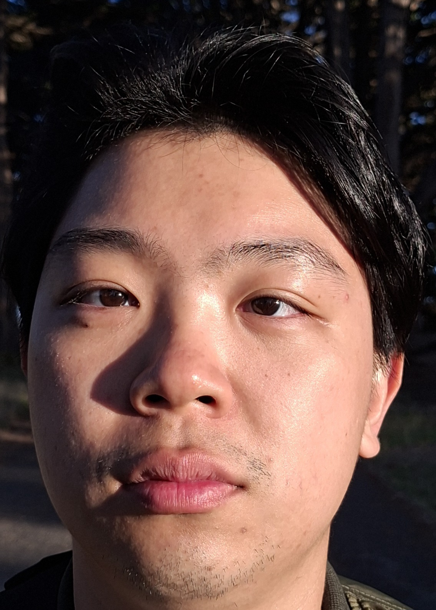
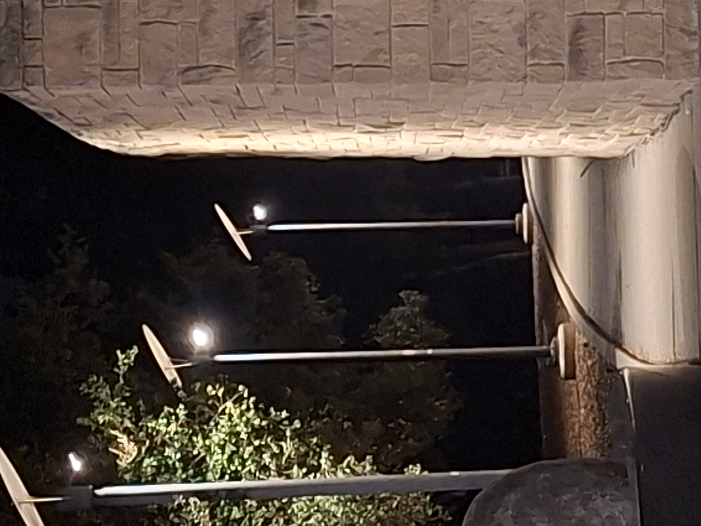
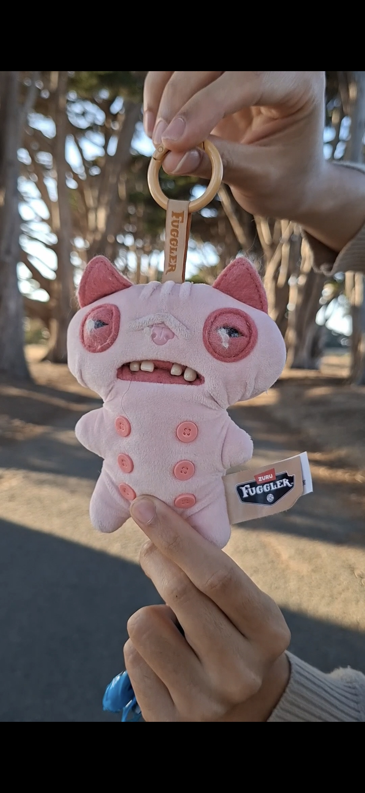
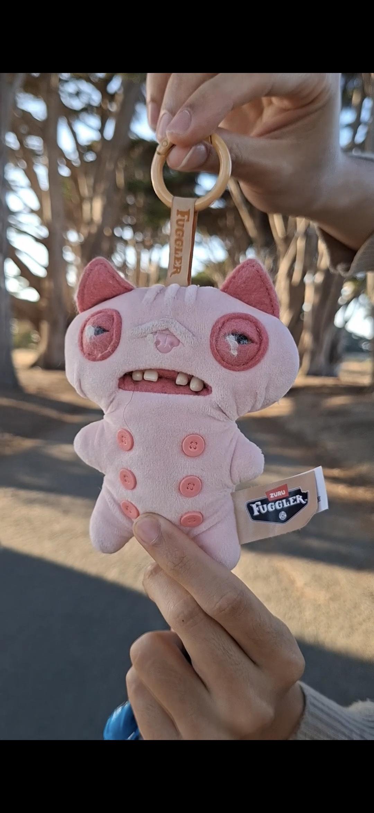
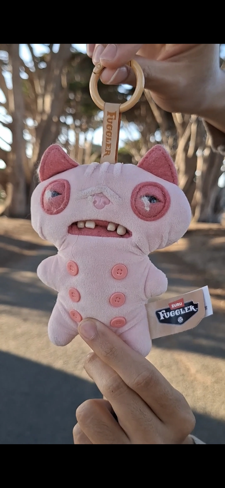
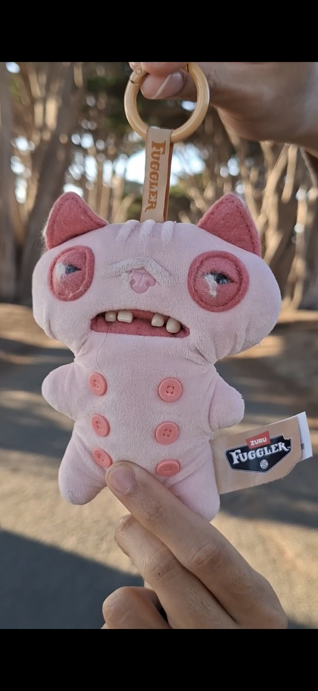
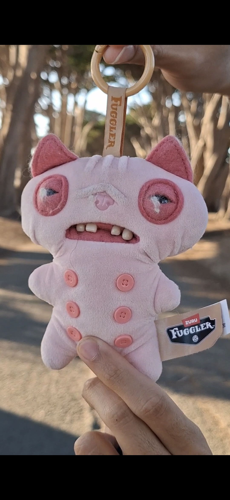
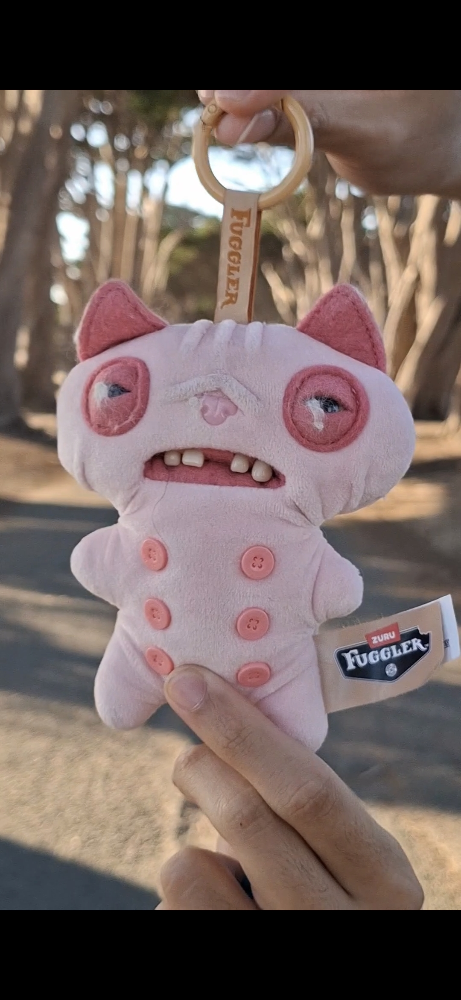
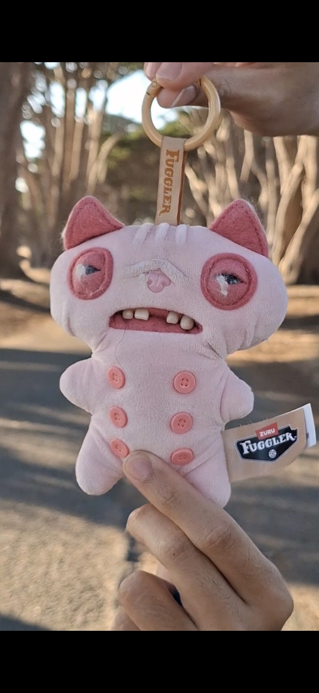
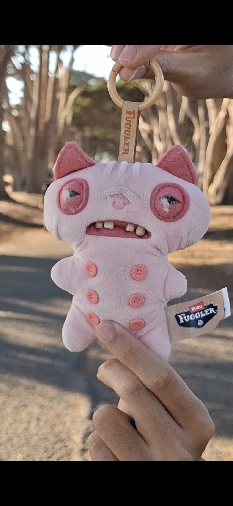

Project 0: Becoming Friends with Your Camera
Part 1: Selfie: The Wrong Way vs. The Right Way
When taken close up, the facial features are closer to the camera, hence making them look larger. At the same time,
features that are further from the camera, such as the ears, shrinks and disappears.
When taken from further back and zoomed in, the relative distance between features like the nose and ears becomes
negligible compared to the distance between the camera. This makes the camera see the facial features in their natural
proportions, making it look much better than the first one.

Part 2: Architectural Perspective Compression
When standing further away and zooming in, the relative distance between the camera, the landscape, and the building changes.
The distance between the landscape and building becomes negligible. This compresses the depth and makes the
objects in the background look bigger and closer to the foreground, flattening the image.
When close up, the camera is now closer to the foreground than the background. This changes the perspective, making
the foreground elements appear larger and the building seems to be stretching away from the camera.


Part 3: The Dolly Zoom








